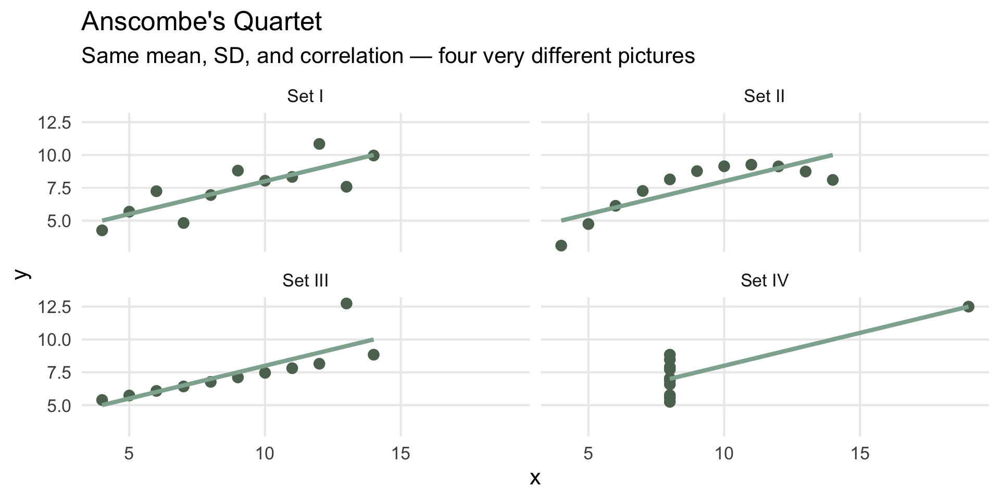
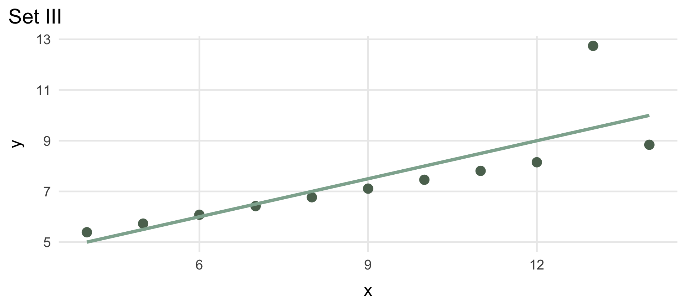
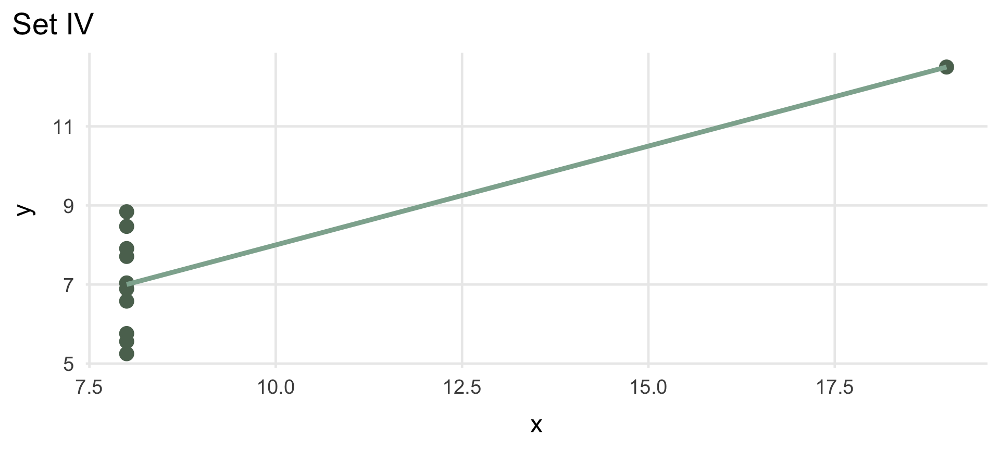
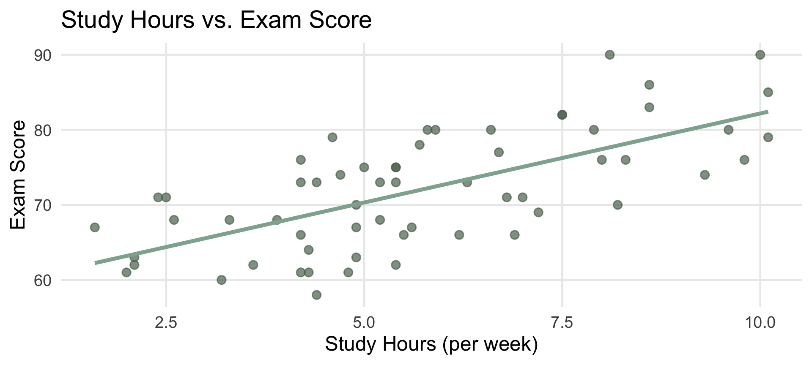
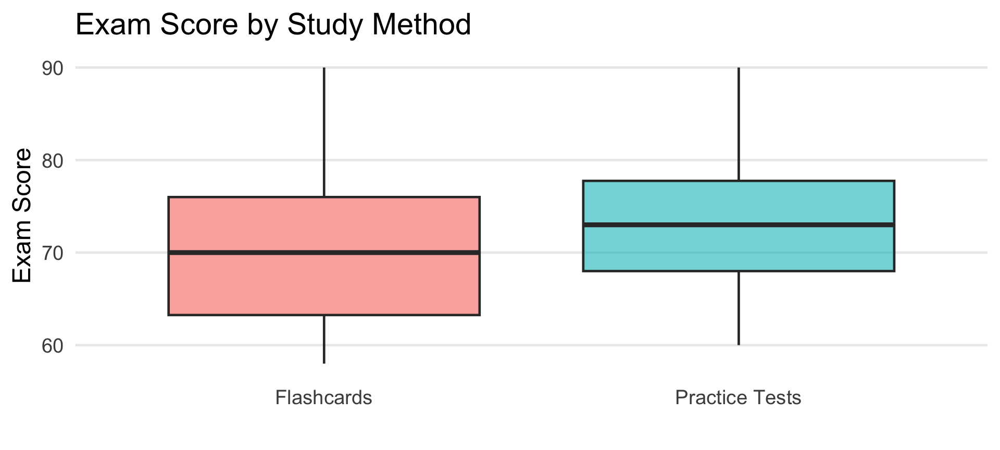
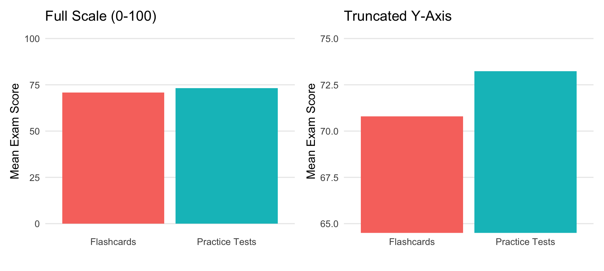

| Anscombe's Quartet: Identical Summary Statistics | |||||
| Mean (x) | Mean (y) | SD (x) | SD (y) | Correlation | |
|---|---|---|---|---|---|
| I | 9 | 7.5 | 3.32 | 2.03 | 0.82 |
| II | 9 | 7.5 | 3.32 | 2.03 | 0.82 |
| III | 9 | 7.5 | 3.32 | 2.03 | 0.82 |
| IV | 9 | 7.5 | 3.32 | 2.03 | 0.82 |
| Anscombe, F. J. (1973). Graphs in statistical analysis. | |||||
PSY 348: Lecture 2
Last time: statistics isn’t just math — it’s how you make sense of decisions you already make every day.
A number by itself is hard to feel — “the average score was 78” doesn’t tell you much on its own
A well-made graph turns a pile of numbers into something you can understand at a glance
This lecture is about choosing and building the right picture for your data
Consider these two ways of showing the same information:
Option A: “The average exam score was 78 (SD = 8).”
Option B: A histogram showing the actual shape of the scores — most students clustered in the 70s, with a small group who struggled and a small group who excelled.
Both are “true.” Only one of them lets you see the students who didn’t fit the average.
These four datasets have (essentially) identical descriptive statistics:
| Anscombe's Quartet: Identical Summary Statistics | |||||
| Mean (x) | Mean (y) | SD (x) | SD (y) | Correlation | |
|---|---|---|---|---|---|
| I | 9 | 7.5 | 3.32 | 2.03 | 0.82 |
| II | 9 | 7.5 | 3.32 | 2.03 | 0.82 |
| III | 9 | 7.5 | 3.32 | 2.03 | 0.82 |
| IV | 9 | 7.5 | 3.32 | 2.03 | 0.82 |
| Anscombe, F. J. (1973). Graphs in statistical analysis. | |||||

Summary statistics (mean, SD, correlation) can hide the actual shape of your data
Outliers, clusters, and non-linear patterns are often invisible in a table of numbers
Always look at the picture — it’s not optional, it’s part of the analysis
| A Quick Decision Guide | |
| What are you showing? | Best chart |
|---|---|
| One categorical variable (counts per group) | Bar chart |
| One continuous variable (its shape/spread) | Histogram or density plot |
| Two continuous variables (a relationship) | Scatterplot |
| A continuous variable, compared across groups | Box plot |
| Change over time | Line chart |
ggplot2 RecipeEvery ggplot2 chart follows the same three-ingredient recipe — we’ll come back to this constantly this semester:
Data — which tibble/data frame are you plotting?
Aesthetics (aes()) — which columns map to x, y, color, etc.?
Geometry (geom_*()) — what shape represents your data (bars, points, lines…)?
We’ll build up from this simple recipe all semester — no need to memorize every option today.
| student | study_time | study_hours | study_method | exam_score |
|---|---|---|---|---|
| 1 | Evening | 7.5 | Flashcards | 82 |
| 2 | Night | 6.6 | Flashcards | 80 |
| 3 | Afternoon | 8.2 | Flashcards | 70 |
| 4 | Evening | 5.4 | Flashcards | 62 |
| 5 | Morning | 4.4 | Flashcards | 58 |



We’ll come back to this exact question — “how strongly are two variables related?” — when we get to correlation.

This is also a preview — “is the difference between these two groups big enough to matter?” is exactly what a later lecture’s t-test answers.

Same exact numbers. The right panel makes a small difference look dramatic — always check where the y-axis starts.
Title — what am I looking at?
Labeled axes — with units, if relevant
An honest scale — start bar charts at 0; don’t cherry-pick a range to exaggerate a difference
Only the elements that add information — no 3D effects, no unnecessary gridlines, no clutter
A summary statistic can hide the actual shape of your data — that’s why we plot it
You can match a research question to the right chart: one variable vs. two, categorical vs. continuous, one group vs. several
You’ve seen the basic ggplot2 recipe: data + aesthetics + geometry
You know how to spot (and avoid) a few common ways graphs mislead
Next time: back to describing that shape with numbers — measures of central tendency.
PSY 348 - Statistics for Psychology